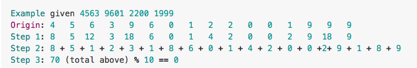
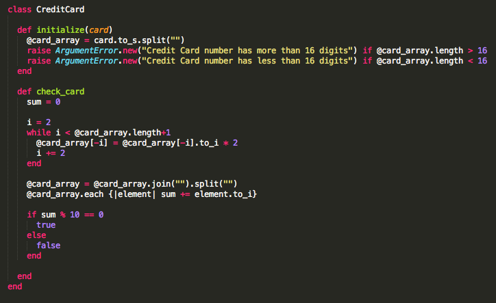

Using a Ruby Class
If you've ever wanted to check a credit card number to see if it's valid, either for your website or an application, you can do it in Ruby using a class method.
The Luhn algorithm is one way of doing this. In the example below we start with a number 4563 9601 2200 1999 that we want to validate. The first step is to double every other number starting from the second to last. Once that is done you'll need to add all the numbers together, also adding any two-digit numbers as though they were two separate numbers. So for example, 12 when calculating the total becomes 3, or 1 + 2. If the sum of all the numbers is divisible by 10, then you know the number is valid.

Working with the Code
Classes in Ruby are defined in CamelCase following the word class. Everything between where you declare the class and its end statement is inside or part of the class. Like objects in real life, classes primarily consist of attributes and actions or methods. An initialize method is a special kind of class method that can take arguments or parameters passed into the class when an instance is created and make them available to any other methods of that same class. Below we have an initialize method that takes a number and returns an argument error if the number is less then or greater then 16 digits.

Our second class method is what checks the number and validates if it's a real credit card. To do this in Ruby we start by creating a variable to hold the final sum, and assign it a value of 0 to start. Then we need to find a way to iterate over the digits of our number in reverse and starting with the second to last, skipping one digit in-between. We began this process in our initialize method by taking our input parameter card and splitting each digit onto an array by first converting it to a string. This was then saved as an instance variable @card_array which we also used to calculate the length when checking for our argument error.
Because we're using an instance variable, this value can now be passed throughout the class every time or instance we call it. To iterate in reverse over our number (now an array of individual digits) we can start with a value of 2 and point to its negative on the index. Arrays can hold negative indexes, so [-1] is the last element of the array and [-2] is the one we want, the second to last.
Then by adding 2 each time, we can move backward (-4, -6, etc) over the array doubling each number until we reach the beginning, where our (positive) number is greater then the length +1. Then to separate the double-digit numbers we can join all the numbers into one and then re-break them apart, splitting the double-digits in the process. After that we just need to iterate over the new array adding each separate number to our sum from the beginning. And if we calculate that our total is divisible by 10, we return true. If not, false.
To call the method we create a new instance of the class: CreditCard.new(4408041234567893), pass in our number, save it as a variable and run the method: card.check_card to validate if it's real. And that's how you can use a Ruby class to validate a credit card number.
Happy Coding!